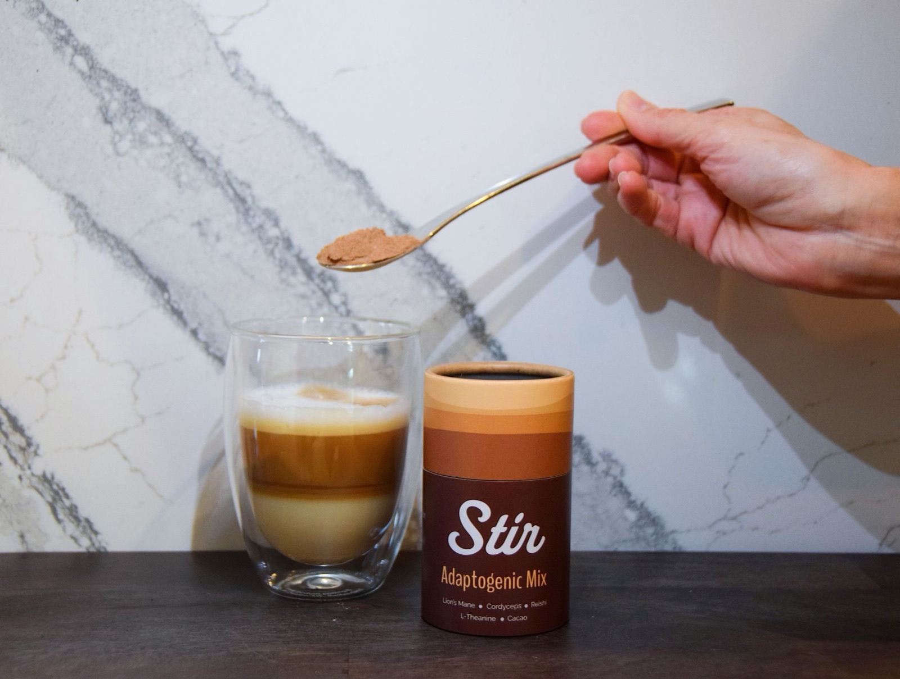
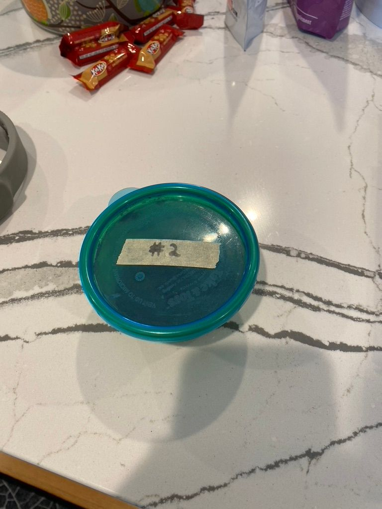
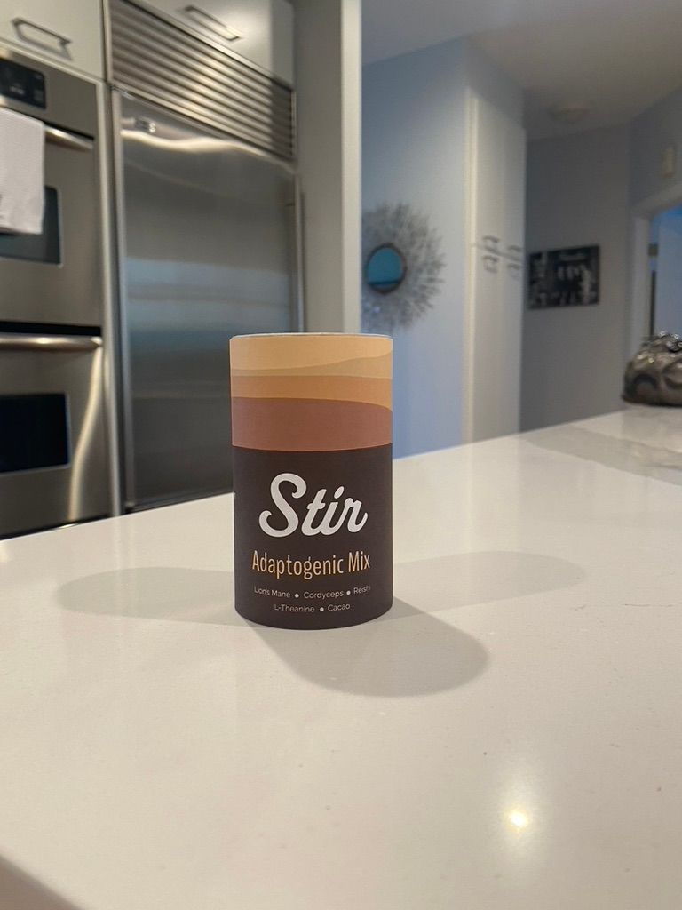
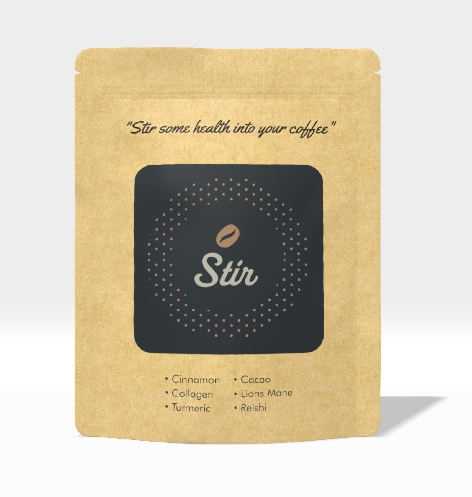
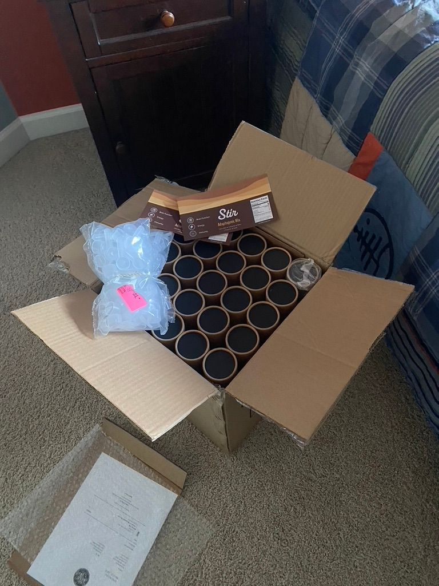
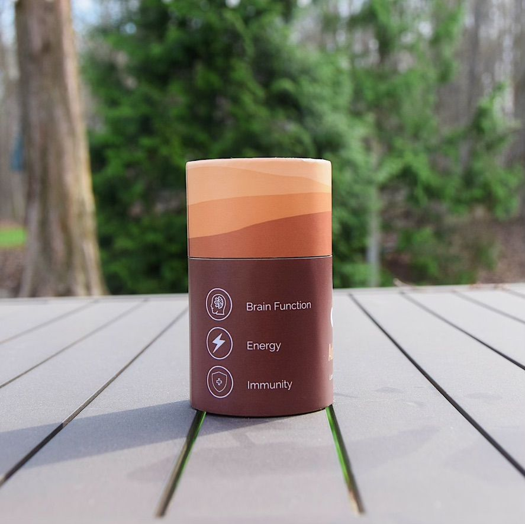
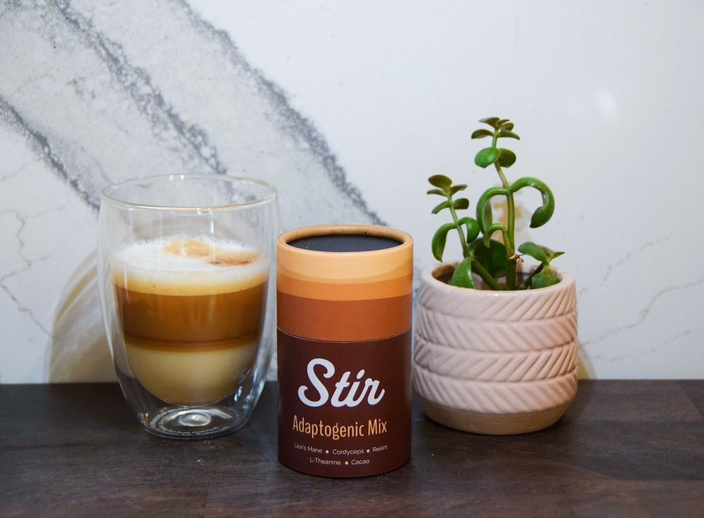
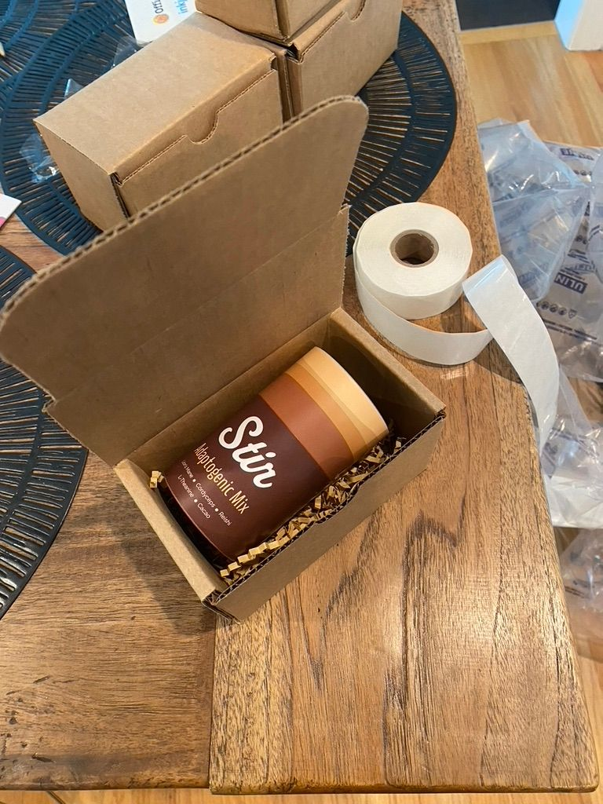
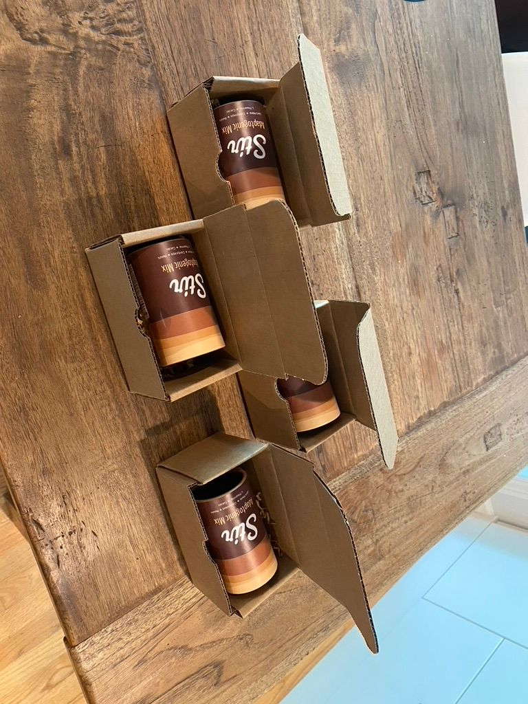
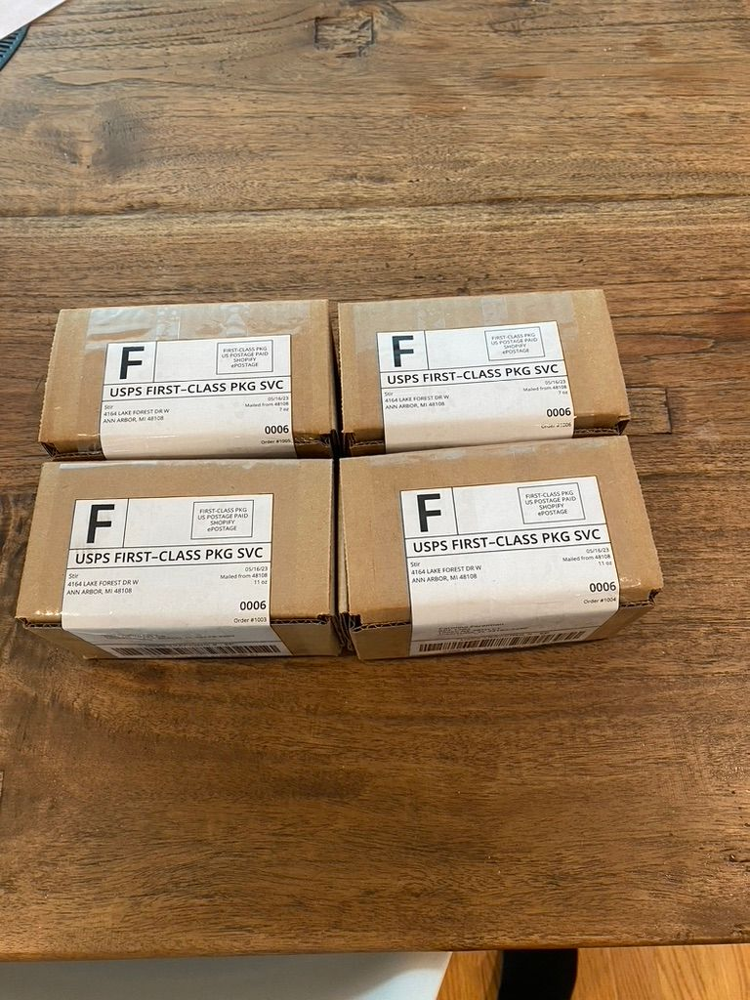

Stir
An adaptogen blend for your morning coffee: the benefits, without changing how it tastes.

Overview
Stir was a blend of natural ingredients, mostly adaptogenic mushrooms, crafted to complement coffee rather than replace it. Stirred into a regular cup, it added energy and focus and took the edge off the jitters.
It sat in a deliberate gap in the functional-beverage market: Mud/Wtr wants you to give up coffee entirely, and Ryze pre-mixes mushrooms into an instant powder. Stir was for people who wanted to keep the coffee they already drink and stir the supplement in.
Background
The idea started when my dad began drinking Mud/Wtr. The adaptogen benefits were interesting, but I wasn't willing to give up coffee to get them, and I couldn't find a supplement that added them to the coffee I already liked without altering the taste.
I was enrolled in an entrepreneurship class at the University of Michigan at the time, so I made this the class project and ran it for real.
The blend
Getting the formula right took months of experimentation, one cup at a time: different ingredients, different ratios, one change per batch, every formula written down. My family were the taste testers; we'd debrief over coffee and I'd iterate until a batch passed.
The packaging went the same way: I designed the label, printed it on paper, and wrapped it around a tube to see it in hand before ordering the real thing.



Launch
I ordered the minimum run of 100 of each component, shot the product photography myself, and built the store on Shopify with custom HTML and CSS where the theme fell short. The site went through several full revisions.






- Shopify + custom HTML/CSS sections
- BixGrow affiliate program
- EcomSend email capture
- Fera reviews
- Recurpay subscriptions
- Canva & Photoshop
Growth
Growth was where the real education happened. I tried three ways to get Stir in front of people, and each one taught a very different lesson.
The first attempts were the obvious ones: paid influencer posts and gifted collaborations, mostly structured around affiliate commission. Almost none of it drove a sale. Trying to understand why sent me down a rabbit hole. The accounts had views, likes, and comments, but the comments were always from the same small group of creators in the same niche. They were podding: private groups that like and comment on each other's posts to manufacture engagement, on top of bought followers. A few gifted creators just took the product and ghosted.
The approach that actually worked came from Tomer Hen, who runs a sleep-supplement brand and talked openly about cultivating relationships with creators instead of running transactions. The idea was to send product for free, at volume, with no strings attached, and let genuine posts happen on their own. It takes far more outreach than a paid deal, but the posts that come out of it are real. I adapted his DM scripts to Stir and reached out as the founder, which consistently landed better because it was genuine.
To run that at volume, I used my CS background and built the whole pipeline myself. Finding creators came first: a Playwright script logged into Instagram, opened the "similar accounts" panel on creators who already fit the niche, and scraped the suggestions. Each candidate's profile and recent posts (bio, follower count, captions, comments, engagement) were pulled through Apify and handed to a CrewAI agent running on OpenAI, which judged whether the creator's content and audience genuinely fit Stir and dropped the ones that didn't. The approved creators landed in a CRM I built on Node, Express, and Supabase.
Outreach ran on a schedule on top of that. The CRM tracked every creator through a status pipeline (pending, outreach, two follow-ups, then delivered and received once product shipped) and only surfaced the ones due for contact that day. For each, one script sent a personalized Instagram DM, typing it out with randomized pauses so it read as human, while Mailgun sent a matching email from my founder address. Every message went out as me, with the creator's name and niche filled in, and each send pushed the creator to the next stage with the next check-in date set automatically.
- Playwright Instagram automation (similar-accounts scraping + DMs)
- Apify profile & post enrichment
- CrewAI + OpenAI creator qualification
- Node · Express · Supabase CRM
- Scheduled DM + email follow-ups (Mailgun)
The outreach bot running: a scripted browser working through creator profiles beside the tracker
Most of it led nowhere. Creators wouldn't post, or would throw up a quick story that no one acted on. But a small number paid off far out of proportion to the rest. Because the post wasn't paid for, it read as genuine, and the creator's audience would start asking about Stir in the comments and DMs. I would follow up with an affiliate code, which some used and some ignored, and a few kept posting on their own or dropped a discount link in their bio. A tiny fraction of creators drove most of the revenue. The automation handled sourcing and the first touches, but everything downstream was hands-on: shipping product, answering replies, and keeping relationships warm. I handwrote a card for every creator and every customer. With a full course load and not much money, I never brought on a VA to absorb the volume, which kept the whole thing slow. It did build a solid base of subscribers.
Fulfillment stayed a family operation. For long stretches my mom packed and shipped every order out of the house, first while I was studying abroad and again after I moved to San Francisco.

Later I tried to scale with paid ads. Commissioned UGC turned out to be expensive: a handful of videos and images ate a real share of the budget. As AI image tools improved, I started generating static ads with ChatGPT and Photoshop instead, and the statics performed better than the UGC and were much easier to iterate on. Individual ads would work for a few days or weeks and then fade, so the work became a constant cycle of new creative.
Ads never got fully profitable. I burned cash early, moved closer to break-even over time, and never had clean visibility into lifetime value because most subscribers were still new. Scaling paid meaningfully would have required far more capital than I was willing to put in.
What customers said
The product itself landed. Reviews were consistently positive and kept coming back to the same things: it kept the coffee they already liked, the taste held up, and the energy felt cleaner without the jitters.
Retention was the strongest signal. The people who subscribed mostly stuck around, churn stayed low, and a large share of subscribers were still active when I wound the business down. Repeat orders, more than any single review, were what told me the formula was right.

Winding down
To bring the per-unit cost down after the initial run of 100, I had committed to a 1,000-unit run of custom packaging from China, so there was real inventory on hand. By 2025, when I was taking Stir seriously, the economics were clear. E-commerce margins are thin. Of everything I tried, influencer seeding was the only reliably profitable channel, and it doesn't scale without a lot of hours or a team, while paid ads don't scale without a lot of capital. For real e-commerce to make sense you need to be doing millions in revenue, and Stir was never going to get there without a level of time and money I wasn't going to commit while working full time. Adaptogens also weren't something I was passionate about. It might have worked if I pushed hard, but I wasn't the right person to push.
So I stopped advertising and sold through the remaining inventory instead of reordering. Stir peaked at around 38 monthly subscribers and wound down with 25 still active, having sold and gifted more than 1,200 units over its run.
Takeaways
- Most influencer engagement is faked. Podding groups and bought followers make gifted and affiliate deals look like reach that never turns into sales
- Free product sent at volume with no strings beat every paid or affiliate deal, and a small fraction of genuine posts drove most of the revenue
- Coding the scraper, AI qualification, and CRM myself let one person run real outreach volume, but it still capped at what I could do by hand
- E-commerce margins are thin: seeding is profitable but slow to scale, paid ads need real capital, and the whole thing only makes sense at large revenue
- Every iteration on a physical product costs real money and real weeks